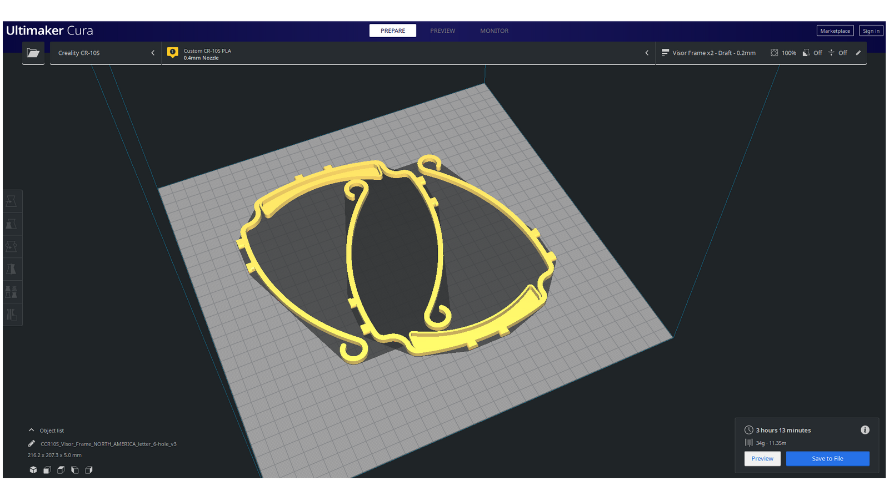
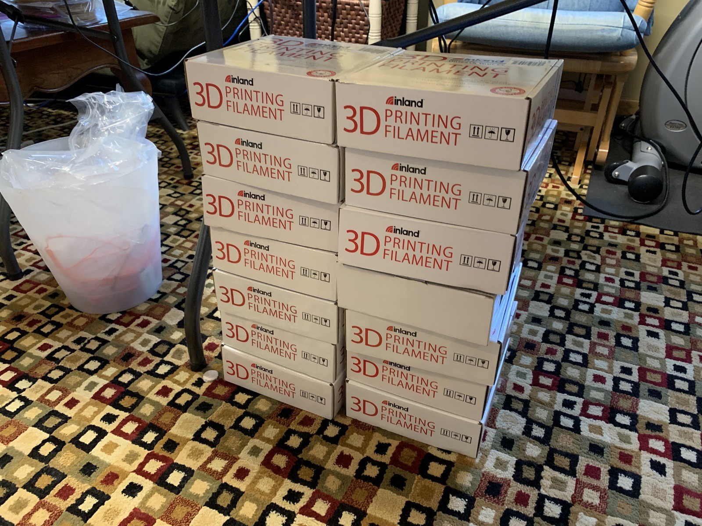
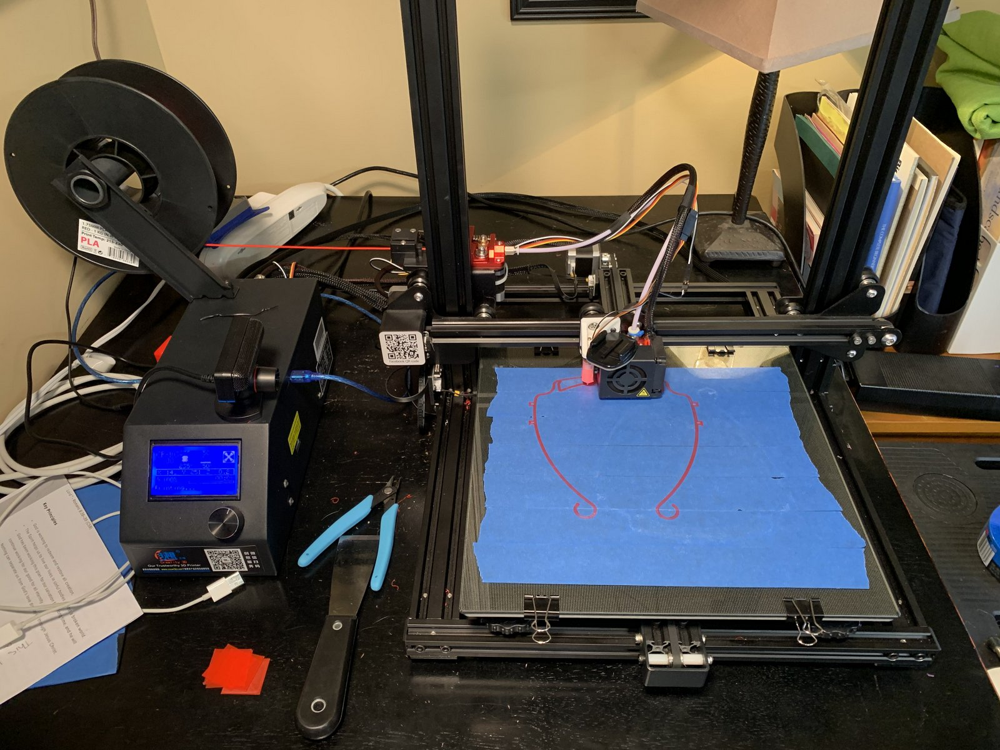
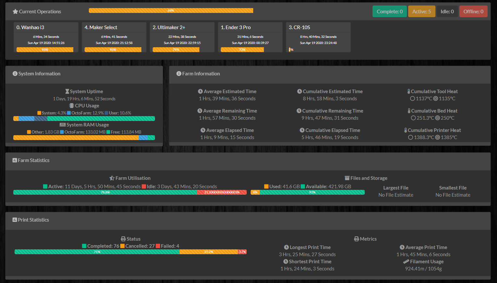
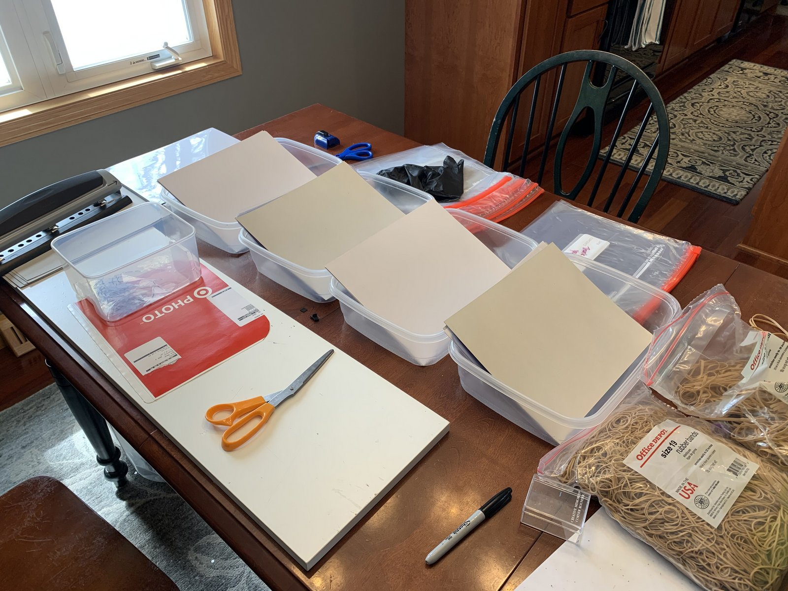
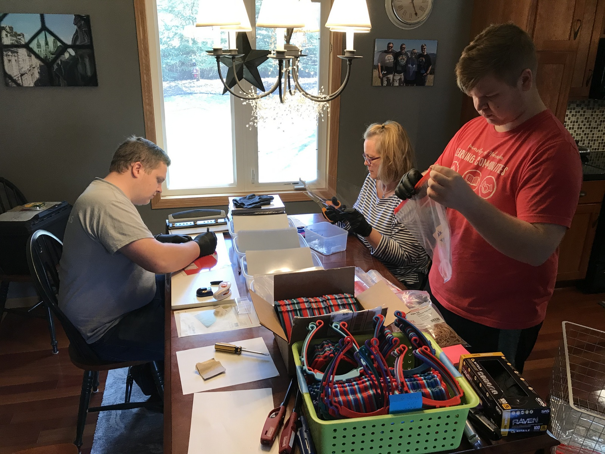
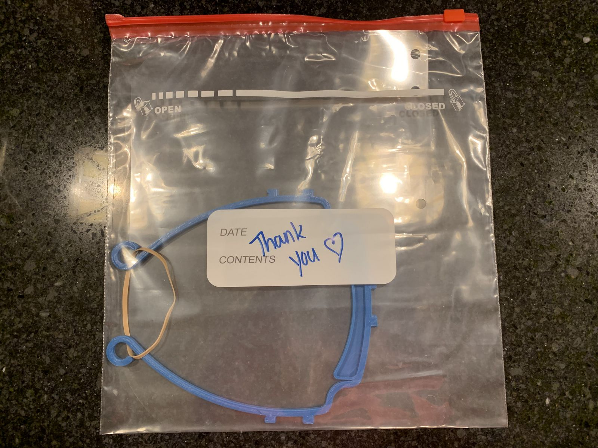
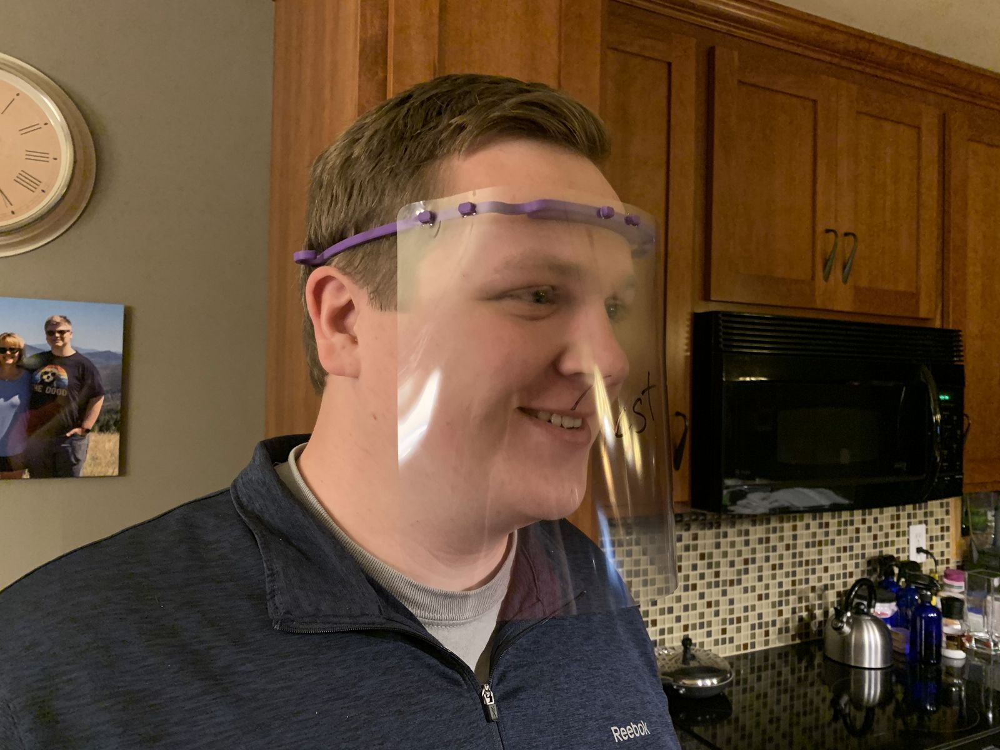

This section will walk you through the process we use to create these face shields and provide you with the information needed to replicate this process, provided you have a 3d printer.
We start with the gcode file which is a swedish design that we found on the internet. A thing that sets this design apart from others is that it does not require elastic and uses less plastic than many other designs. In our current world, certain materials are in very high demand right now, so it was nice to find something that did not require elastic, which is one of them.
Some designs use either large amounts of materials, or materials that are in high-demand because of their current need for face shields. The design that we use requires PLA, clear sheets, rubber bands, ziploc bags, and a modified hole puncher
We currently have six 3d printers currently running at a capacity of nearly 90 visors per day. Each print takes about 1.5 hours, after which it is removed, cleaned, and another print is started.
With six printers going at different speeds all day long, it can be a bit much to manageon top of jobs/school. Because of this, I have set up the printers with an online management system so we can remotely monitor the status of the printers and start a print from online.
Everything up until now has been about the visors, the part that holds up the face shield. The actual shield part is made from binder cover sheets which have the corners rounded and get hole-punched so they can fit on the visor.
In order to efficiently transport the shields, we do not assemble them but instead assemble shield kits with assembly instructions in each delivery. Each kit includes one visor, one shield, and one rubber band (to secure the shield on the back of the head in order to follow regulations) in a ziploc bag with a little thank you message to show our appreciation for the front-line fighters against this pandemic.
We work with various healthcare institutions including hospitals, nursing homes, and dental clinics to distribute the shields we make in order to maximize the effect of these donations.
We'd like to thank the healthcare workers on the front lines of this pandemic, the people that are helping us do this project with materials and getting us in contact with healthcare institutions, and everyone that is staying in their house and stemming the tide.
created with
Free Website Builder .